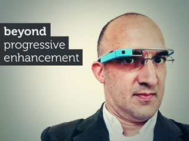
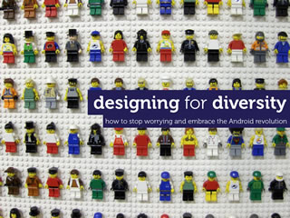
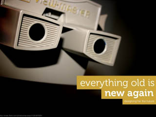

We help businesses create smart, adaptable,
and future-friendly products for mobile and beyond.
Founded in 2003 by Bryan and Stephanie Rieger,
yiibu is a user experience design and consulting firm with a deep
expertise in mobile and emerging technologies.
How we work
We're small :-)
When you hire Yiibu, you get the two of us. Period. Staying
small means we have little overhead and can focus entirely on
the work we do. We don't leave your project to juniors, or
farm work out to other companies or contractors. As such we
tend have a lot of repeat business; so much in fact that we
typically work with only a few very special clients each
year.
We're experienced
We have extensive mobile experience and specific expertise
designing for highly diverse and globally-distributed
audiences.Our process is highly iterative and includes
frequent prototyping and on-device testing using our in-house
lab. This enables us to spot performance and compatibility
problems early on, and involve necessary stakeholders to
ensure that your creative, technical and business goals
are realized.
We work with you
If you choose to work with us, we will get to know your
company, your customers, and your product. Not because we
want to up-sell you, but because mobile isn't just a project—it's
a journey. We're happy to work with your management, engineers
and stakeholders to understand and explore the impact of
mobile on the success and profitability of your organization.
Areas of expertise
Strategic consulting
- Research and analysis
- Stakeholder guidance and training
- Multi-device approach and delivery
- Product strategy (emerging
technologies, user behaviour, global usage trends)
Design Services
- Multi-device user experience design
- Cross-platform (web and Android)
responsive and adaptive design
- User experience evaluation (heuristic
and on-device testing)
- UX best practice and technical
documentation
Realization
- Rapid prototyping
- Front-end development
- Hands-on consultancy
(e.g. design and performance optimization)
Our thinking
We hold workshops, speak at conferences around the world, and
regularily publish our thinking through our presentations. Here
are just a few of our more popular ones. For regular news and insights,
please check out Stephanie's blog or follow Bryan and Stephanie on
Twitter.
-

Generate Conf
London, UK
-

UX Cambridge
Cambridge, UK
-
UX Cambridge
Cambridge, UK
-

MOBX 2012
Berlin, Germany
-
MOBX 2012
Berlin, Germany
-
MOBX 2012
Berlin, Germany
-
MOBX 2012
Berlin, Germany
-
MOBX 2012
Berlin, Germany
-
MOBX 2012
Berlin, Germany